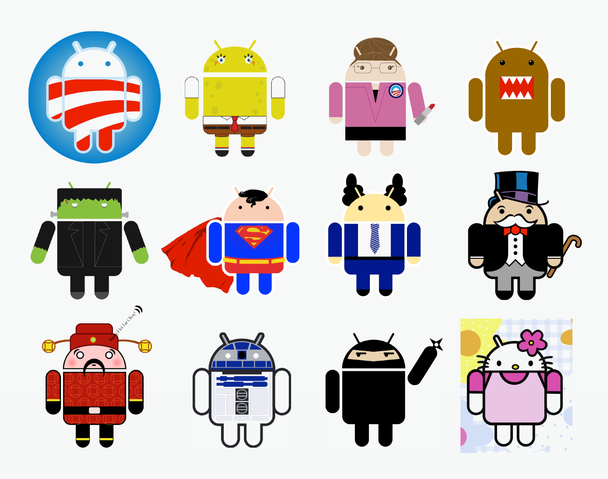

Poucos sabem mas o Mascote do Android – aquele simpático Robozinho verde – é uma criação da Designer Irina Blok.
De acordo com o New York Times, ela trabalhou no Google durante o ano de 2007, ano que o Google tinha planos adiantados para estrear sua plataforma móvel e precisava de um símbolo para identificá-la junto aos consumidores.
“Blok e seus colegas foram orientados a criar um olhar para o software – algo que os consumidores poderiam identificar facilmente. O logotipo deveria envolver um robô e assim ela estudou brinquedos de ficção científica e filmes de espaço – qualquer coisa que pudesse ajudá-la a criar um personagem. No final, ela se inspirou-se em pictogramas do homem universal e uma mulher, que muitas vezes aparecem nas portas de banheiros. Ela então desenhou um robô despido com um torso separado e uma cabeça com antenas”, diz a publicação.
Em seu site oficial, Blok complementa que o robozinho verde era parte da campanha de lançamento no qual iria funcionar como o código aberto da plataforma, permitindo que a comunidade de desenvolvedores pudessem estabelecer a identidade para o novo produto e gerar entusiasmo entre os engenheiros.
Blok atualmente trabalha na Edmodo, uma rede social para alunos e professores, e diz que o logotipo pode ser comparado a criação de um filho: “Você dá a vida para essa pessoa, e então eles têm uma vida própria.”
